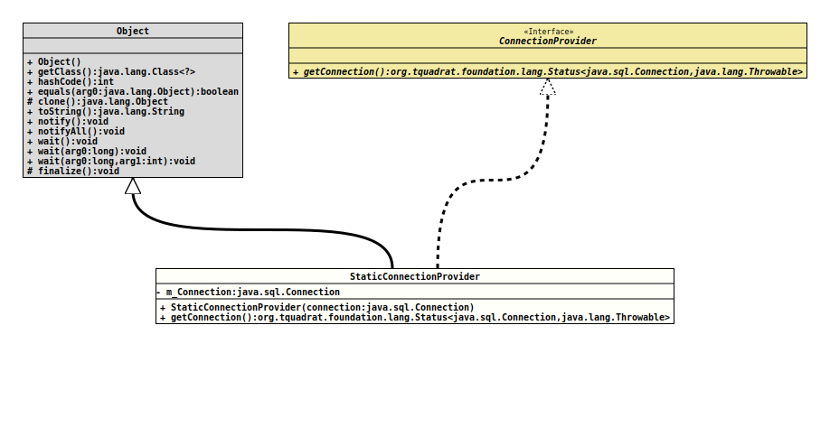

Module org.tquadrat.foundation.sql
Package org.tquadrat.foundation.sql
Class StaticConnectionProvider
java.lang.Object
org.tquadrat.foundation.sql.StaticConnectionProvider
- All Implemented Interfaces:
ConnectionProvider
@ClassVersion(sourceVersion="$Id: StaticConnectionProvider.java 1024 2022-03-10 09:57:43Z tquadrat $")
@API(status=STABLE,
since="0.1.0")
public final class StaticConnectionProvider
extends Object
implements ConnectionProvider
An implementation of
ConnectionProvider
that returns always the same
Connection
instance.
This connection provider should not be used for production purposes! It will not allow the connection to be closed, the database session remains open for its whole lifetime. In addition, it is by no means thread-safe!
It can be used for testing purposes, or when the database access is needed for a very short period of.
- Author:
- Thomas Thrien (thomas.thrien@tquadrat.org)
- Version:
- $Id: StaticConnectionProvider.java 1024 2022-03-10 09:57:43Z tquadrat $
- Since:
- 0.1.0
- UML Diagram
-

UML Diagram for "org.tquadrat.foundation.sql.StaticConnectionProvider"
{kind=link}
-
Nested Class Summary
Nested ClassesModifier and TypeClassDescriptionprivate final classAn implementation ofConnectionthat replaces the implementation of the methodStaticConnectionProvider.UnclosableConnection.close()by a dummy that does nothing. -
Field Summary
Fields -
Constructor Summary
ConstructorsConstructorDescriptionStaticConnectionProvider(Connection connection) Creates a new instance ofStaticConnectionProvider. -
Method Summary
Modifier and TypeMethodDescriptionfinal Status<Connection,Throwable> Returns a valid database connection.
-
Field Details
-
m_Connection
The connection.
-
-
Constructor Details
-
StaticConnectionProvider
Creates a new instance of
StaticConnectionProvider.The provided connection must be open and valid, although this will not be checked here.
- Parameters:
connection- The connection that is returned by each call to
-
-
Method Details
-
getConnection
Returns a valid database connection.
In case of an error, the method will set the
errorCodeattribute of the returnedStatusobject.- Specified by:
getConnectionin interfaceConnectionProvider- Returns:
- An instance of
Statusthat holds the retrieved connection.
-